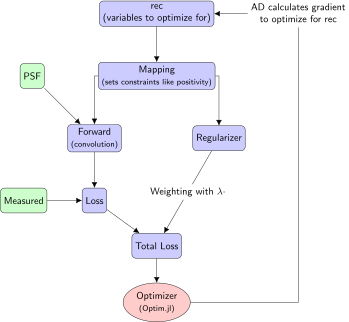

Basic Workflow
In this section we show the workflow for deconvolution of 2D and 3D images using different regularizers. From these examples one can also understand the different effects of the regularizers.
The picture below shows the general principle of DeconvOptim.jl. Since we interprete deconvolution as an optimization we initialize the reconstruction variables rec. rec is a array of pixels which are the variables we are optimizing for. Then we can apply some mapping eg. to reconstruct only pixels having non-negative intensity values. Afterwards we compose the total loss functions. It consists of a regularizing part (weighted with $\lambda$) and a loss part. The latter one compares the current reconstruction with the measured image. Total loss adds both values to a single scalar value. Using Zygote.jl we calculate the gradient with respect to all pixel values of rec. Note, Zygote.jl calculates the gradient with a reverse mode. From performance point of view, that is necessary since the loss function is a mapping from many pixels to a single value ($\text{total loss}: \mathbb{R}^N \mapsto \mathbb{R}$). We can plug this gradient and the loss function into Optim.jl. Optim.jl then minimizes this loss function. The different parts of the pipeline (mapping, forward, regularizer) can be exchanged and adapted to the users needs. In most cases changing the regularizer or the number of iterations is enough.

For all options, see the function references. Via the help of Julia (typing ] in the REPL) we can also access extensive help.